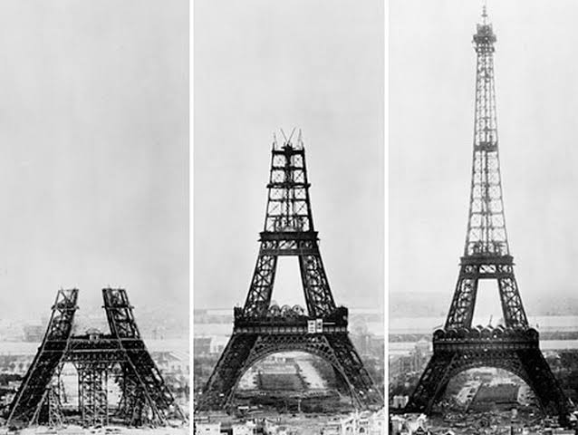

למה נבנה מגדל אייפל?
בשנות ה-80 של המאה ה-19 צרפת רצתה לחזק את מעמדה ולהציג את עצמה כמדינה מודרנית ומתקדמת. לקראת שנת 1889 תוכננה בפריז תערוכה עולמית גדולה, שנערכה לציון מאה שנים למהפכה הצרפתית.
מטרת התערוכה הייתה להציג הישגים מדעיים וטכנולוגיים ולמשוך מבקרים רבים לפריז. המארגנים רצו ליצור מיצג יוצא דופן שיהפוך לאטרקציה המרכזית של התערוכה.
התחרות על המיצג המרכזי
לקראת התערוכה פורסם קול קורא להצעות למיצג טכנולוגי מרשים במיוחד. בין הרעיונות שהגיעו לשלבים האחרונים היו ממטרה ענקית, גיליוטינה עצומה ומגדל ברזל בגובה של יותר מ-300 מטרים.
בסופו של דבר נבחר הרעיון של גוסטב אייפל: מגדל ברזל עצום שהיה אמור להפוך למבנה הגבוה ביותר בתקופתו.
אילו רעיונות נוספים הוצעו?
- ממטרה ענקית להשקיית גני פריז
- גיליוטינה עצומה לזכר קורבנות המהפכה
- מגדל ברזל עצום
תחילת הבנייה
המגדל נבנה בשנת 1889 בשאן דה מארס ונקרא על שם המהנדס גוסטב אייפל. בנייתו עוררה בזמנו התנגדות רבה ואף נשקל לפרקו. כיום המגדל הוא סימן ההיכר של פריז ושל מדינת צרפת כולה. מיליוני מבקרים פוקדים את האתר מדי שנה.
עד לשנת 1889, שבה נחנך מגדל אייפל, נחשבה אנדרטת וושינגטון למבנה הגבוה בעולם. עם השנים השתנה מעט גובהו של המגדל בעקבות תוספות שונות של אנטנות.

התנגדות למגדל אייפל
במהלך בניית מגדל אייפל בשנים 1887–1889 התעוררה בפריז סערה ציבורית. אמנים, סופרים ואינטלקטואלים טענו שהמגדל פוגע באופי האדריכלי של העיר.
"מגדל אייפל חסר התועלת והמפלצתי"
— מתוך מחאת האמנים נגד מגדל אייפל, 1887
- מכתב המחאה בעיתון: קבוצה בולטת של אמנים, סופרים ואינטלקטואלים פרסמה מכתב מחאה חריף בעיתון הצרפתי Le Temps.
- דמויות מפורסמות: בין המתנגדים החתומים היו הסופר גי דה מופאסאן, המלחין שארל גונו, והאדריכל שארל גרנייה (מתכנן האופרה של פריז).
- טענות מרכזיות: המבקרים כינו את המגדל "מפלצת שחורה וענקית", עמוד תיל מגושם ומכוער, או "ארובת מפעל" שתשחית את קו הרקיע ההיסטורי של פריז.
- אמנות ולגלוג: הסופר אוסקר ויילד טען שהוא רוצה לגור במגדל רק כדי לא לראות אותו, וגי דה מופאסאן נוהג לאכול במסעדה שעל המגדל כי זה המקום היחיד בפריז שממנו לא רואים את המבנה.